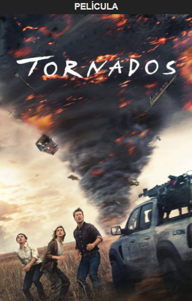

Sinopsis
Riley, ahora adolescente, enfrenta una reforma en la Central de sus emociones. Alegría, Tristeza, Ira, Miedo y Asco deben adaptarse a la llegada de nuevas emociones: Ansiedad, Vergüenza, Envidia y Ennui. ¿Cómo manejarán este inesperado cambio?